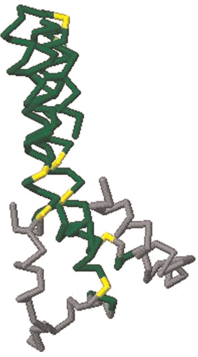
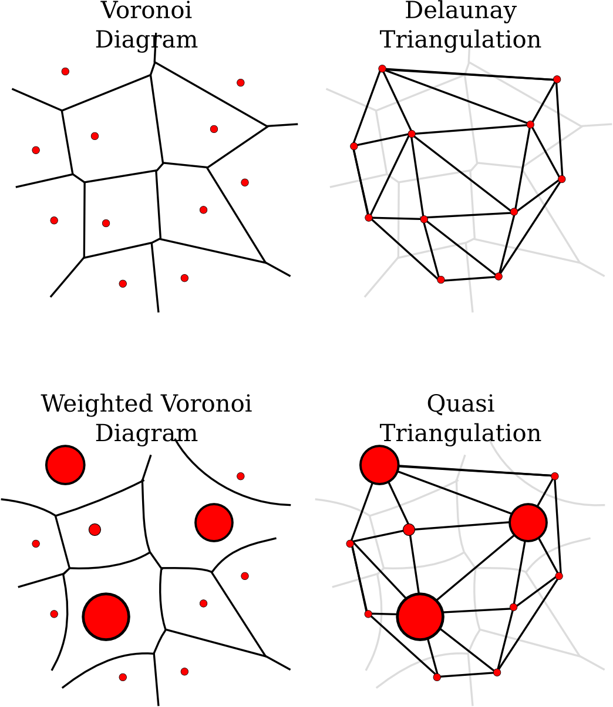

Rasmus Fonseca
Project ideas
These are project ideas that I would love to do myself, but probably wont find the time to do in the near future. If you like any of the ideas please contact me before using them.
Exact GDT
The Global Distance Test (GDT) is a similarity measure for protein structures that indicates the largest fraction of atoms of one structure that can be superposed onto another structure such that the distance between matched atoms is less than some cutoff (typically values between 0.5Å and 10Å). This measure is extensively used in CASP and for PSP methods.
The original algorithm for finding the GDT, called LGA, is described by Zemla and is a heuristic. There is exists, however, an exact O(n7)-method [Choi et al., Ambuhl et al.]. Although this method may not be generally useful it would be interesting to implement it and determine how good the LGA algorithm is. It would also be interesting to investigate the expected running-time of the exact algorithm and of course if there is any room for improvements. Recently an approximation algorithm was suggested [Li et al. 2011]
Topology coordinates for proteins
[Ho 09] is a paper on character motion synthesis by topology coordinates. It would be interesting to investigate if protein motions (conformational sampling) could be performed with the writhe matrix idea.
Delaunay tessellations in higher dimensions
 Given a set of points P in d dimensions, a tessellation is the largest set of disjoint d-simplices (e.g. triangles for d=2, tetrahedra for d=3, pentachoron in d=4, etc..) with corners in P. A Delaunay tessellation is a tessellation where a hypersphere (e.g. circle for d=2, sphere for d=3 and 4-sphere for d=4) can be placed around each d-simplex such that no points from P are in the spheres interior. The Bowyer-Watson algorithm is a relatively easy method to find the Delaunay tessellation in any dimension.
Given a set of points P in d dimensions, a tessellation is the largest set of disjoint d-simplices (e.g. triangles for d=2, tetrahedra for d=3, pentachoron in d=4, etc..) with corners in P. A Delaunay tessellation is a tessellation where a hypersphere (e.g. circle for d=2, sphere for d=3 and 4-sphere for d=4) can be placed around each d-simplex such that no points from P are in the spheres interior. The Bowyer-Watson algorithm is a relatively easy method to find the Delaunay tessellation in any dimension.
It would be interesting to have an implementation to find the d-dimensional Delaunay tessellation, for example using the Bowyer-Watson algorithm. An initial implementation should be made in 2D and then extended to d dimensions. Preferably the implementation would be integrated into the ProGAL library. If this turns out to be trivial there are a number of possible extensions that can be explored. First, the Bowyer-Watson method is known to be fragile to rounding errors, so it can be explored how the method can be made exact. Another extension would be to explore how Delaunay tessellations could be used for clustering and data mining in higher dimensions [1, 2].
Quasi-triangulation
The Delaunay triangulation of a set of points is the dual of the Voronoi diagram of the points. Similarly a quasi-triangulation of a set of circles is the dual of the Voronoi diagram of the circles (see figure). We are currently working on using Delaunay triangulations for analyzing proteins. An implementation of a method for finding quasi-triangulations, possibly in 3D, would be very relevant to our research.
- Menelaos I.K. and Ioannis Z.E. Predicates for the planar additively weighted Voronoi diagram. Technical Report ECG-TR-122201-01, INRIA Sophia-Antipolis, Sophia-Antipolis (2002)
- Menelaos I.K. and Ioannis Z.E. Root comparison techniques applied to computing the additively weighted Voronoi diagram. In Proc. 14th ACM-SIAM Sympos. Discrete Algorithms (SODA), pages 320-329 (2003)
- Kim D.S., Kim D., Cho Y. and Sugihara K. Quasi-triangulation and interworld data structure in three dimensions. Computer-Aided Design 38(7), 808-819 (2006)